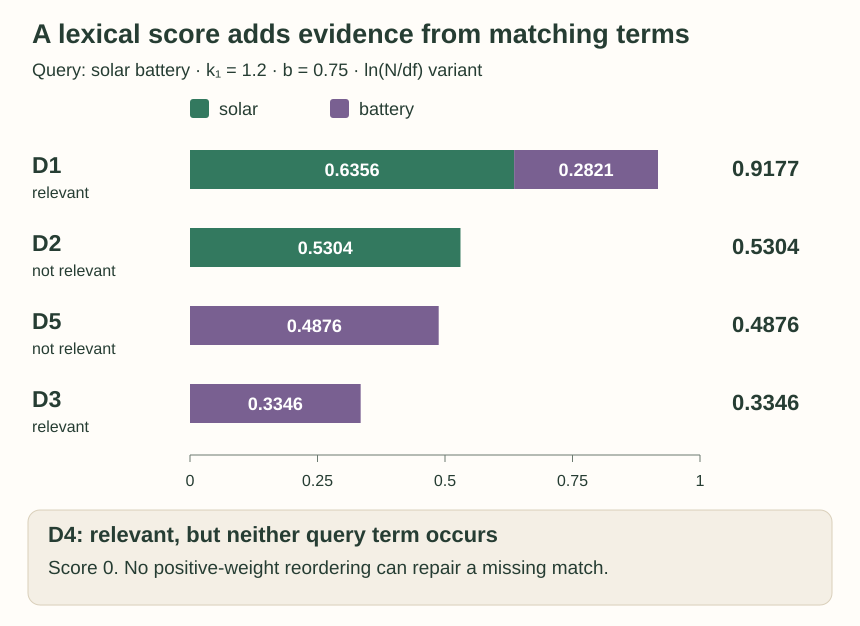
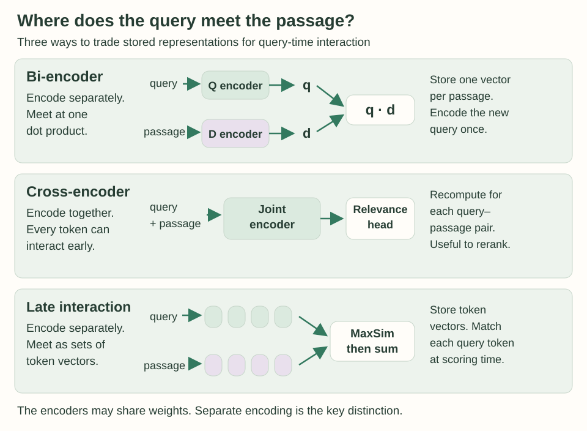
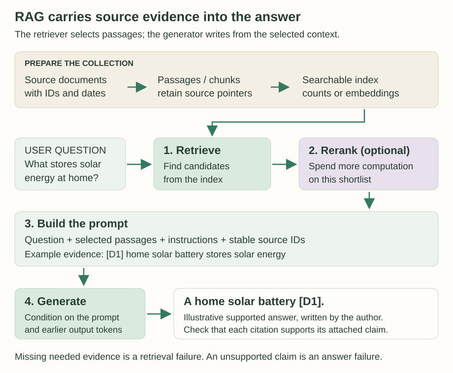

Information Retrieval and RAG: Find Evidence Before You Generate
A fluent answer can still be wrong. Retrieval gives a language model something concrete to consult: selected passages from a collection. The challenge is to find useful evidence, put it within reach, and check that the answer actually follows from it.
What you will learn: calculate lexical retrieval scores, explain a missed paraphrase, evaluate a ranked list, compare neural retrieval architectures, and follow the evidence through a retrieval-augmented generation pipeline.
This original companion follows Chapter 11, “Information Retrieval and Retrieval-Augmented Generation”, in Jurafsky and Martin’s August 19, 2026 draft: sparse retrieval (§11.1), evaluation (§11.2), dense retrieval (§11.3), RAG (§11.4), and QA datasets and evaluation (§§11.5–11.6). All passages, calculations, diagrams, and lab code below are newly constructed teaching examples.
1. Start with an information need
Information retrieval returns items from a collection in response to a query. The items might be web pages, papers, or short passages. A “document” means the unit being retrieved; it need not be a complete file. In ad hoc retrieval, the user supplies a new query and receives a ranked list.
The query is an imperfect expression of an information need. Someone looking for material about household energy storage might type solar battery. Those two words do not specify every relevant concept, and a passage containing both is not automatically useful.
We will use six deliberately tiny passages. Tokenization is fully specified: lowercase words separated by spaces, with no stemming or stop-word removal. The displayed strings are the entire collection. We assign relevance by the stated information need, independently of the retrieval algorithm.
| ID | Passage | Tokens | Relevant? |
|---|---|---|---|
| D1 | home solar battery stores solar energy | 6 | Yes |
| D2 | solar panel makes electricity | 4 | No |
| D3 | home battery stores energy | 4 | Yes |
| D4 | household accumulator stores rooftop power | 5 | Yes |
| D5 | battery battery battery recycling guide | 5 | No |
| D6 | wind turbine makes electricity | 4 | No |
D2 concerns generation, D5 recycling, and D6 wind generation. D4 describes storage with different words. Its relevance creates a useful test: can the retriever find the right idea without an exact lexical match? These judgments are intentionally simple; real relevance assessment needs an annotation policy and often multiple assessors.
2. Turn words into weighted vectors
A bag-of-words representation has one dimension per vocabulary term. Each passage fills a few dimensions and leaves most at zero, making the vector sparse. It preserves frequency while losing word order. “Battery powers house” and “house powers battery” would therefore have identical count vectors despite their different claims.
Raw counts overreward repetition and common vocabulary. TF-IDF adjusts both. Following the chapter’s log-frequency convention, let f(t,d) be a term’s raw count and df(t) the number of collection documents containing it:
tf(t,d) = 1 + log10 f(t,d) when f > 0; otherwise 0.
idf(t) = log10(N / df(t))
w(t,d) = tf(t,d) × idf(t)
The distinction between frequency and document frequency matters. D5 contains three occurrences of battery, but contributes only one document to its document frequency. Across the collection, solar appears in two documents and battery in three. With N = 6, their IDFs are 0.477121 and 0.301030.
Both query words occur once, so its nonzero weights are simply [0.477121, 0.301030]. D1’s solar weight is (1 + log10 2) × 0.477121 = 0.620749. Doubling the count increases the weight, but does not double it.
To compare query and passage vectors, use their cosine similarity. The denominator normalizes their lengths, so a larger vector is not rewarded merely for being larger:
cos(q,d) = (q · d) / (‖q‖ ‖d‖)
For D1: 0.386792 / (0.564149 × 1.010869) ≈ 0.678248.
The dot product only needs matching dimensions, but D1’s norm includes all its weighted terms: home, solar, battery, stores, and energy. Dropping unmatched terms from that norm changes the model. An empty query or a zero vector has no defined cosine; an implementation must handle that case explicitly.
Using this exact recipe, D2 scores 0.355492, D3 0.201334, and D5 0.199905. D4 and D6 score zero. IDF measures distinctiveness within this collection; it does not establish truth or relevance. A unique typo can receive a large IDF too.
3. Calculate BM25, one term at a time
BM25 gives each matching term a contribution that grows with frequency but saturates. It also adjusts for document length relative to the collection average. Repeating a word in a short passage and encountering it once in a huge document need not provide equal evidence.
There are several BM25 conventions. To keep every number reproducible, this tutorial uses the shape of the chapter’s Eq. 11.12, with natural-log IDF, raw term counts, and each distinct query term counted once:
A(d) = 1 − b + b × |d| / avgdl
score(q,d) = Σt∈unique(q) ln(N / df(t)) × f(t,d) / [f(t,d) + k1A(d)]
An absent term contributes 0, including when k1 = 0.
Some implementations multiply the numerator by k1 + 1 or use a smoothed IDF. The former multiplies every score by the same positive constant for fixed k1, preserving that ranking; a different IDF can change the ranking. Do not compare raw scores across conventions. BM25 is already a scoring rule: we do not take another cosine of these document scores.
Here avgdl = 28/6 = 4.666667. Use k1 = 1.2 and b = 0.75. D1 has six tokens, so:
A(D1) = 0.25 + 0.75 × 6/4.666667 = 1.214286
solar contribution = ln(6/2) × 2 / (2 + 1.2 × 1.214286) = 0.635561
battery contribution = ln(6/3) × 1 / (1 + 1.2 × 1.214286) = 0.282095
score(q,D1) = 0.917656

The controls have precise meanings. At b = 0, document length has no effect. At b = 1, the length factor is |d|/avgdl. Increasing b penalizes longer-than-average documents more while helping shorter-than-average ones. This changes a term’s contribution; it does not remove the term.
At k1 = 0, every present term contributes its IDF exactly once, regardless of frequency. For positive k1, the fraction f/(f + k1A) approaches 1 as f grows. Larger k1 delays saturation, making additional occurrences matter over a wider range. In our convention its absolute scores also shrink as k1 increases, so inspect ordering rather than treating a bigger score as a universal measure of quality.
4. Find candidates and experiment
A search engine should not reread every document for every query. An inverted index maps terms to postings lists: document IDs plus counts and, if useful, token positions. For our query, just two lists identify every lexical candidate:
solar → D1:2, D2:1
battery → D1:1, D3:1, D5:3Take their union, look up document lengths, calculate scores, and keep the highest-scoring candidates. The union is D1, D2, D3, D5. D4 cannot enter it by changing BM25’s parameters. Positions support phrase matching; counts alone cannot tell whether two words were adjacent.
Index and query processing must agree. Lowercasing, splitting hyphenated terms, stemming, and removing stop words all affect matches. Removing common function words can damage phrase queries; IDF already downweights terms that occur almost everywhere. There is no universally harmless preprocessing step.
Change the ranking, then check what is missing
Compute BM25 directly on the six visible passages. The relevance labels stay fixed. Query expansion adds the word accumulator explicitly; no embedding model or automatic synonym finder runs here.
Query terms: solar + battery. Lexical candidates: 4 of 6. Average passage length stays 4.6667 tokens.
| Rank / ID | Score | Contributions | Relevant? | Selection |
|---|---|---|---|---|
| 1. D1 | 0.9177 | solar: 0.6356; battery: 0.2821 | Yes | Returned |
| 2. D2 | 0.5304 | solar: 0.5304; battery: 0.0000 | No | Returned |
| 3. D5 | 0.4876 | solar: 0.0000; battery: 0.4876 | No | Returned |
| 4. D3 | 0.3346 | solar: 0.0000; battery: 0.3346 | Yes | Returned |
D4 contains neither solar nor battery. No setting of k₁ or b can make it a lexical candidate for this query.
Ties use ascending document ID. If fewer than K candidates exist, precision here divides by the number actually returned; it is labeled accordingly. AP always divides by all three relevant passages, with unreturned ones contributing zero. The worked state remains readable without JavaScript.
Try three experiments: set k1 to zero and observe D3 tie D5; reset and add accumulator to make D4 retrievable; then compare cutoffs 3 and 5. Adding a candidate can improve early results while a short cutoff still excludes another relevant passage.
5. Measure the ranked list
A relevance score is a model output. A retrieval metric compares the resulting list with separate relevance judgments. In our collection there are three relevant passages in total. At rank K:
Precision@K = relevant passages in the top K / K
Recall@K = relevant passages in the top K / 3
For the default ranking D1, D2, D5, D3, precision and recall evolve as follows. Each row evaluates the prefix ending there, not that document alone.
| Rank | Document | Relevant so far | Precision | Recall |
|---|---|---|---|---|
| 1 | D1 | 1 | 1 | 1/3 |
| 2 | D2 | 1 | 1/2 | 1/3 |
| 3 | D5 | 1 | 1/3 | 1/3 |
| 4 | D3 | 2 | 1/2 | 2/3 |
Recall never falls as the list grows. Precision can fall when an irrelevant item arrives and rise when a relevant one arrives. A precision–recall plot makes that tradeoff visible. Interpolated precision at a recall level uses the highest precision attained at that recall or above; for this list it is 1/2 at recall 1/2.
Average precision (AP) rewards relevant documents appearing early. Add the precision at each relevant hit, assign zero to a relevant document never retrieved, and divide by the number of relevant documents in the collection. This explicit denominator follows the standard convention in Manning, Raghavan, and Schütze, §8.4.
AP = [P@1 + P@4 + 0 for D4] / 3
AP = (1 + 1/2 + 0) / 3 = 0.5
Dividing only by the two found relevant passages would conceal the missed third one. If we evaluate a cutoff, we keep the same denominator and treat relevant items below that cutoff as unretrieved. Mean average precision (MAP) averages AP across queries, giving each query equal weight. One query’s AP is not a reliable estimate of system quality.
With query expansion and all five candidates returned, the ranking is D1, D4, D2, D5, D3. Its AP is (1 + 1 + 3/5)/3 = 0.866667. Recall reaches 1, while precision is only 3/5. “Found every relevant item” and “returned only relevant items” are different achievements.
Check yourself: Can a perfect reranker repair the default four-candidate list completely?
No. It can put D1 and D3 first, improving early precision. D4 is absent, so recall cannot exceed 2/3. Even the best ordering of those candidates has AP = (1 + 1 + 0)/3 = 2/3. Candidate generation sets a ceiling that reordering cannot exceed.
6. Retrieve with dense vectors
The missed D4 illustrates vocabulary mismatch: relevant text may use different words. Dense retrieval represents queries and passages with learned embeddings. Instead of demanding a nonzero count in the same word dimension, it measures compatibility in an embedding space.
A bi-encoder separately computes zq = Eq(q) and zd = Ed(d), often scoring their dot product. The encoders may share weights; the important property is that each passage can be encoded without knowing the future query. Store passage vectors in advance, encode a new query once, and search those stored vectors.
To make the arithmetic visible, assign q = [0.8, 0.6] and the following two-dimensional passage vectors. These are invented coordinates, not outputs of a trained model or evidence that a particular retriever works. Their purpose is to demonstrate the scoring operation.
| Passage | Vector | q · d |
|---|---|---|
| D1 | [0.9, 0.7] | 1.14 |
| D2 | [0.8, −0.2] | 0.52 |
| D3 | [0.7, 0.6] | 0.92 |
| D4 | [1.0, 0.4] | 1.04 |
| D5 | [0.1, 0.2] | 0.20 |
| D6 | [0.2, −0.4] | −0.08 |
For D4, 0.8 × 1.0 + 0.6 × 0.4 = 1.04, despite its zero lexical score. The resulting order starts D1, D4, D3. Dot products may exceed one or be negative; they are not probabilities. Normalizing both vectors would instead make the dot product equal cosine similarity, potentially changing this ordering. Match the search metric to the encoder’s training recipe.
Where do useful coordinates come from? Retrieval training provides a query, a relevant passage, and negatives. One contrastive objective asks the positive passage to win a softmax over the candidate scores:
L = −ln [exp(s(q,d+)) / Σd∈candidates exp(s(q,d))]
Using D1 as the positive and D2/D5 as negatives, the illustrative scores [1.14, 0.52, 0.20] give positive probability 0.518518 and loss 0.656780 nats. This softmax is conditional on those three candidates. It is not a calibrated probability that D1 is relevant in the world.
Negatives shape the learning problem. Random unrelated passages can be easy; retrieved but irrelevant passages create harder distinctions. A passage missing an answer string is not automatically a true negative, because paraphrases exist. Validate such labels. Hold out queries for development and final evaluation, and account for near-duplicate passages or queries when splitting.
Searching millions of dense vectors exactly can be expensive. Approximate nearest-neighbor indexes trade some search accuracy for speed; Faiss is a library providing vector-search methods, not one fixed ranking formula. This introduces a second possible miss: the encoder may assign a good score, yet approximate search may fail to return the item. Evaluate retrieval after the index as well as the representation.
7. Spend computation on interaction
A single passage vector must serve many possible questions. A cross-encoder instead reads query and passage together, allowing attention across both before a relevance head scores the pair. It can examine detailed relationships that an independent summary may miss.
The cost is query dependence: a passage’s joint representation changes with the query, so it cannot be fully precomputed once for every future search. A practical two-stage design first retrieves a shortlist with sparse or dense search, then applies the cross-encoder to those candidates. Its score may be a raw scalar, a sigmoid output, or a relevant-class probability from a multi-class head; a softmax over one scalar alone would always equal one.

ColBERT-style late interaction occupies another point in this design space. Encode the query and passage separately, but preserve a vector for each token rather than collapsing each text to one vector. For each query-token vector, find its largest similarity to any passage-token vector, then sum those maxima:
score(q,d) = Σi maxj (qi · dj)
If two query tokens have similarities [0.9, 0.2, 0.1] and [0.3, 0.8, 0.4] to three passage tokens, MaxSim yields 0.9 + 0.8 = 1.7. These stipulated similarities illustrate aggregation only. Each query token gets its own best match; two query tokens may select the same passage token. It is not a one-to-one alignment.
The MaxSim rule has no learned weights, but the token encoders and projections do. Stored token vectors cost more space than one vector per passage. Which architecture is best depends on data, training, latency, storage, and the required quality; an expensive architecture does not guarantee a better result on every query.
8. Build an answer around evidence
Retrieval-augmented generation (RAG) joins retrieval to a language model. Retrieve passages, construct a prompt containing those passages and the question, and generate an answer conditioned on that prompt. Basic RAG can use an existing retriever and generator without updating either model’s parameters.
This makes three things possible: access to a collection absent from pretraining, use of updated documents, and answers with inspectable source references. Those benefits depend on which documents were indexed and what was retrieved. Adding search does not by itself make an answer accurate or current.

Suppose the question is What stores solar energy at home?. One deliberately small prompt could contain:
Evidence:
[D1] home solar battery stores solar energy
[D2] solar panel makes electricity
Question: What stores solar energy at home?
Answer from the evidence. Cite the supporting passage.
If the evidence does not answer the question, say so.A supported answer is A home solar battery [D1]. D2 is related to the topic but does not support that storage claim. An additional claim about price, lifespan, or capacity would lack support here, however plausible it sounded.
Formally, if R(q) is the selected evidence and y the answer tokens, generation models:
P(y | q, R(q)) = ∏i P(yi | instructions, q, R(q), y<i)
The retrieved text changes the generator’s conditioning context. It is not an automatic update to the model’s stored parameters. The generator can still misread, ignore, or contradict that context, so an instruction to cite evidence needs evaluation rather than blind trust.
Choose useful retrieval units
Long documents are usually divided into passages or chunks. A very small chunk may drop the subject of a sentence, an exception, or a date. A very large chunk can mix many topics and consume the prompt budget. Chunk size is measured using an explicit tokenization scheme; a search tokenizer and a generator’s subword tokenizer may count differently.
Preserve the parent document, passage boundaries, version or date where relevant, and a stable source pointer. If an answer cites D1, the interface should be able to recover exactly which text D1 denoted. Overlapping chunks may preserve boundary context but also return repeated evidence; five near-identical passages do not establish five independent sources.
Separate candidate selection from prompt selection
A retriever might return a broad pool, a reranker reorder it, and prompt construction choose only a few passages that fit. Measure each stage. Relevant evidence can be found initially but lost through truncation or an overly short final cutoff. More retrieved text also means more opportunities for distraction or conflicting claims.
Keep source text distinguishable from instructions and retain its attribution. Retrieval relevance says that a passage appears useful for the query; it says nothing by itself about its authority, date, or whether all its claims are true. A cited answer can faithfully repeat a mistaken source, and a correct answer can cite the wrong passage. These are separate evaluation cases.
Go beyond a single retrieval call when the task requires it
A multi-hop question may need one retrieval result to formulate the next query. For example, first identify a product’s manufacturer, then look up that manufacturer’s support policy. Routing can choose a collection or decide whether retrieval is needed at all. These extensions add decisions to test, not a guarantee that more steps improve the answer.
The chapter also discusses training a generator on questions, retrieved passages, and answers, or training the retrieval and generation components toward the final task. A passage useful for general topic search may be insufficient for answering a precise question. RAG training should therefore reflect the downstream evidence use, including irrelevant passages and cases with no supported answer.
9. Evaluate the whole task
Retrieval metrics diagnose access to evidence. Question-answering metrics diagnose the answer. A system can retrieve the right passage and answer incorrectly, or answer correctly from memory while failing to use the retrieved evidence. Record both outcomes.
For multiple-choice questions, exact match often compares the selected option with the gold option. For short free-text answers, specify normalization before calculating exact match or token F1. Lowercasing, punctuation removal, article removal, and accepted aliases can change results.
For a transparent example, lowercase, remove punctuation, split on spaces, and keep every remaining word. Let the reference be home solar battery and the prediction solar battery. Two tokens overlap:
Token precision = 2/2 = 1; token recall = 2/3.
Token F1 = 2PR/(P + R) = 0.8; exact match = 0.
Compute overlap as a multiset: repeating a token cannot match it more times than it appears in the reference. Average per-question F1 when reporting a dataset score. String overlap gives partial credit but does not establish semantic correctness: adding a negation may preserve most words while reversing the answer.
For RAG, also inspect whether answerable questions received supported answers, whether each citation entails its attached claim, and whether insufficient evidence led to an appropriate response. Keep retrieval misses, incorrect reading, unsupported additions, and source problems separate. That classification points to different fixes.
The chapter’s datasets illustrate why an evaluation protocol matters. Natural Questions and MS MARCO contain information-seeking queries; TyDi QA broadens the language coverage. MMLU contains exam-style knowledge questions. A multiple-choice exam and a search question with supporting passages test different conditions.
Open-book evaluation provides or retrieves external evidence; closed-book evaluation asks the model to answer without it. State the collection, retrieval budget, evidence access, prompting, and scoring rules. Comparing systems under different access conditions can hide where an apparent improvement came from. Tune parameters and cutoffs on development queries, then report final results on held-out queries with the protocol fixed.
Check yourself: If every answer has a citation, have we established that the answers are grounded?
No. The cited passage must support the specific claim. In our example D2 mentions solar electricity but does not support the claim about home storage. A citation marker establishes a pointer; checking the content establishes support.
Check yourself: Is the dense example’s 1.04 for D4 “more confident” than BM25’s 0.917656 for D1?
No. These are scores from different functions and scales. Neither is a calibrated probability. Compare rankings and held-out task metrics under a fixed protocol, not the magnitudes of unrelated scores.
You can now follow a failure backward: an unsupported answer leads to its selected context; missing context leads to candidate retrieval; a missing lexical candidate leads to the representation and query terms. The individual computations are small enough to inspect, even when a production collection is enormous.
Reproduce the numbers and return to the source
Download the dependency-free Python example and run python3 retrieval-example.py. It prints term contributions, TF-IDF cosines, dense dot products, the contrastive loss, ranking metrics, and token F1. The browser lab implements the same BM25 convention; the SVG generator reproduces the original diagrams alongside that example.
- SLP3 §11.1, pp. 3–10: vectors, TF-IDF, document scoring, BM25, and inverted indexes.
- SLP3 §11.2, pp. 10–13: ranked retrieval evaluation. The IR textbook’s §8.4 supplies the explicit AP convention for unretrieved relevant documents used here.
- SLP3 §11.3, pp. 13–16: dense retrieval, joint and separate encoders, ColBERT, training, and vector search.
- SLP3 §§11.4–11.6, pp. 16–20: RAG, extensions, citations, datasets, and QA evaluation.
Source version: August 19, 2026 draft, retrieved September 22, 2026. The lab, hand-assigned dense vectors, prompt, and answer are teaching constructions; no fitted model performance is claimed.